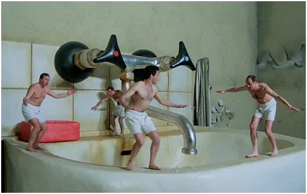
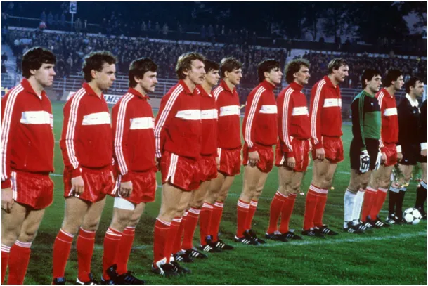
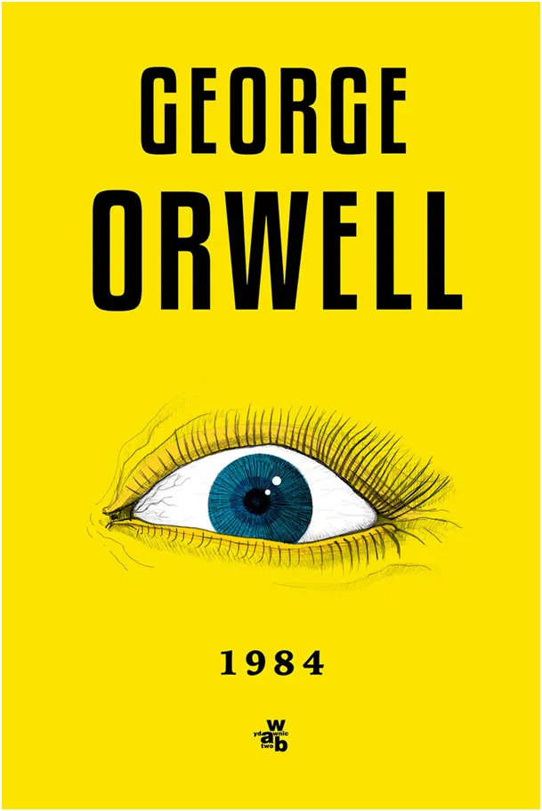
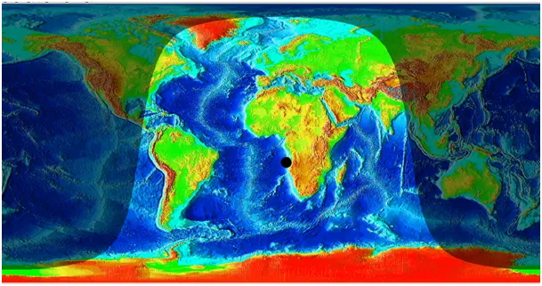
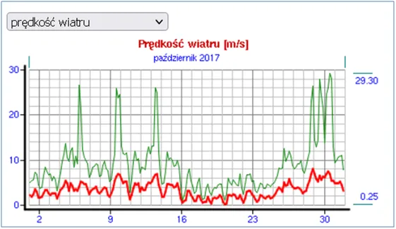
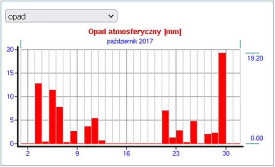
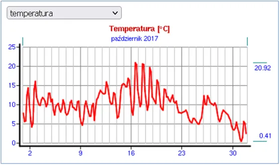

Demokracja w rękach Słońca i Księżyca
Pogański tytuł zobowiązuje i szybko nanoszę korektę klasykiem: „Człowiek strzela, a Pan Bóg kule nosi.”
W 1984 bywałem gościem wielu „osiemnastek”. Mimo to przez różowe okulary młodości widziałem smutek życia w PRL, dotykał on 95% znajomych, czyli prawie wszystkich. Kluczem jest słowo „prawie”, była nas garstka, którzy zupełnie nie przejmowaliśmy się dramatem ówczesnego mega kryzysu i żyliśmy sobie w Kingsizie.
„Polo Cocktę” i dobre „fajki” kupowaliśmy, w „Pewexie”, jeździliśmy na koncerty do Jarocina, ale długim łukiem omijaliśmy imprezy z reżimowymi gwiazdami typu „Lady Pank”, które dorabiały wtedy krocie koncertując w Moskwie itp.

Jest cienka bariera między realnym życiem, a życiem skrojonym przez Matrix. Dziś, gdy mamy Internet bardzo łatwo ją zobaczyć, wystarczy w Google wpisać „news” i cały Matrix stoi przed nami z opuszczonymi spodniami. 40 lat temu były w TV dwa programy i było jeszcze łatwiej. Wystarczyło do każdego zdania słyszanego w TV dodać słowo „NIE” i człowiek był już na bieżąco z tzw. rzeczywistością.

Przed nami 15 X „święto demokracji”, czyli wybory. W tym sezonie jestem nawet kandydatem do Sejmu i musiałem podpisać absurdalne oświadczenie lustracyjne. Bycie Polakiem to ciężki przypadek w skali światowej, hańbą jest służenie w elitarnych służbach stojących na straży bezpieczeństwa własnego państwa, taki sztos!

Wracajmy do przyszłości! W Polsce o strukturze władzy decyduje absencja, a jeszcze kilka lat temu najmniejsza partia o 100% zdolności koalicyjnej, czyli PSL Teraz PSL jest passe i nazywa się „Trzecia droga”. Samo pojęcie jest zabarwione absurdem, gdy na rozdrożu mamy dylemat, czy iść w prawo, czy w lewo to zza krzaka wychyla się zapłakany Szymek i mówi „Trzecia Droga”. To powtórka z Balcerowicza, który na pytanie, czy się bogacić, czy biednieć dał Polsce złotą receptę „sprzedajcie wszystko za bezcen i zaciągajcie nowe długi”.



Na światowej scenie politycznej mamy spory chaos i „nasi” nie wiedzą do końca jak obstawiać. 15 X to „Dzień papieski” i etos sprzyja POPiSowi. Październik to w Polsce piękny miesiąc złotej jesieni i naród w tym czasie ma wielkie serca jak świerszcz, co grał na skrzypcach, gdy mrówki zbierały zapasy. Bywa jednak czasem, jak w 2017, że aura mocno daje w kość i z nieba leje się deszcz, wichura zrywa czapki a temperatura spada blisko zera. Taki scenariusz 15 X radykalnie zmniejsza frekwencję i nie pomogą tu pancerne berety. Strach przed „wirusami” został tak głęboko zaimplementowany, że może być różnie. Dorośli ludzie, nawet najmniej rozgarnięci, rozumieją, że u św. Piotra czternasta emerytura niewiele pomaga. Zatem przenieśmy się do przyszłości jak to robią amerykańscy naukowcy i poczekajmy. 15 X wypada zaraz po nowiu księżyca. Umieram z ciekawości. Dane meteo meteo.waw.pl
Paweł Klimczewski
Dziękuję ze wsparcie niezależności mediów w Polsce.